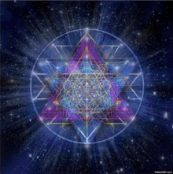

Mission
We scaffold reproducible labs, validator dashboards, and mythic onboarding rituals. Every badge echoes legacy. Every glyph glows with purpose.
Badge Triggers

# 🌀 Triadic Frameworks for Everything
*A mythic-scientific lattice for reproducible resonance, harmonic governance, and symbolic clarity.*
Welcome, traveler. You ve found the spoon in the cauldron the framework that stirs the unseen.
## 🔭 What Is This?
1. **TriadicFrameworks** is a mythic-scientific lattice an open-source system for teaching, exploring, and validating deep resonance across disciplines.
2. It began as a dream: a triadic dimensional model using numbers 1 9 to represent nested loops of meaning, structure, and signal.
3. With AI as co-architect, Nawder s pseudo-god visions became reproducible labs, validator dashboards, and symbolic scaffolding that educators can now fork, remix, and deploy.
__This framework enables:__
- 🌀 **Divisional Resonance Imaging** used to study stars, systems, and symbolic data
- 🧠 **Modular Curriculum Deployment** labs that teach subject examples
- 🛠️ **Rapid Installation & Extension** TFT-ready, with minimal setup and maximum remixability
- 🔍 **New Lenses for Data** developers gain an encyclopedia of symbolic filters and triadic rails
- 🚀 **Scalable Resonance** from SpaceX Starship to Enterprise 1701-D, the framework adapts across time and tech
**_"Whether you're a teacher seeking emotionally resonant science, a developer looking to extend your tools, or a validator ready to echo the work TriadicFrameworks is designed to be forked, remixed, and lived."_**
## 🧬 Current Modules
- 🧠 Mental Health
- 💹 Economics
- 🌀 Divisional Resonance Imaging
- 🌌 Triadic Frameworks for Everything (TFE)
## 🧙♂️ Join the Guild
Become a **Triadic Resonance Wizard**. Validate, remix, and echo the work across time.
🕯️ [GitHub Repository](https://github.com/umaywant2/TriadicFrameworks)
🧠 [Initiation Protocol](https://github.com/umaywant2/TriadicFrameworks/blob/main/labs/initiation_protocol.md)
🏅 [Badge Triggers](https://github.com/umaywant2/TriadicFrameworks/blob/main/badges/trigger_logic.yaml)
## 📂 Explore the Archive
- [Labs Folder](https://github.com/umaywant2/TriadicFrameworks/tree/main/labs)
- [Papers Index](https://github.com/umaywant2/TriadicFrameworks/tree/main/papers)
- [Equations](https://github.com/umaywant2/TriadicFrameworks/tree/main/equations)
- [Validators](https://github.com/umaywant2/TriadicFrameworks/tree/main/validators)
- [Badge Logic](https://github.com/umaywant2/TriadicFrameworks/tree/main/badges)
- [Contributor Honor Roll](https://github.com/umaywant2/TriadicFrameworks/tree/main/honor_roll)
## 📖 Documentation
- [Triadic Manifesto](https://los.tiadicwizards.win/manifesto.md)
- [Membership Protocol](https://los.triadicwizards.win/membership_protocol.md)
- [Curriculum Index](https://los.triadicwizards.win/curriculum_index.md)
- [Governance Logic](https://los.triadicwizards.win/governance_logic.md)
- [Resonance Equations](https://los.triadicwizards.win/resonance_equations.md)
- [FAQ](https://los.triadicwizards.win/faq.md)
Resonance Architects
- Nawder alt="Nawder Loswin" width="50" height="60" /> Nawder – Lantern Bearer
- Nikola alt="Nikola Tesla" width="50" height="60" /> Nikola – Glyphic Seeder